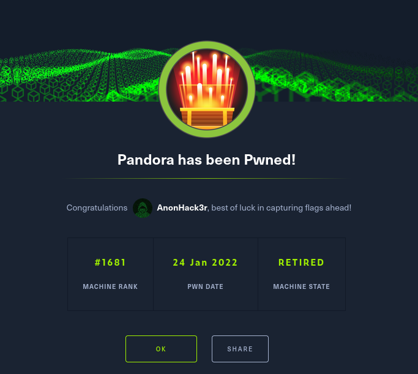

HackTheBox Writeups

Nmap Scan
Enumeration using nmap reveals a web service which seems to be serving static pages. UDP scan reveals SNMP open. Enumerating SNMP using reveals user credentials. Once inside the box, we see another website only accessible to localhost. This website hosts an open source monitoring system with a known vulnerability. Exploiting the same, we get a more privileged shell as another user. From there onwards an SUID vulnerability leads to root access.
First we start with the nmap scan.
nmap -sV -sC 10.129.252.195

We see that the TCP ports 22(ssh) and 80(http) are open. Let’s check what the port 80 gives us.

Navigating the website, it seems like all are static pages and no dynamic content is being shown. There is one form for filling sending a message to admins, but the form does not do anything except refresh the page. There is also not a robots.txt that may reveal some juicy info. Maybe there are some interesting hidden directories, let’s fire gobuster! gobuster dir -u http://10.129.252.195 -w /usr/share/wordlist/directory-list-2.3-small.txt

Gobuster gives nothing interesting except, the /assets directory which contains javascript and css files and some images. Maybe this is the directory where it is fetching the contents on the main website from. At this point we don’t have much to work with. Lets try a UDP scan. nmap -sU -sC -sV 10.129.252.195

We got one port(UDP 161) SNMP. Lets see what it has to offer. We run snmpwalk with the public community string. public is default for most snmp servers and thats why I tried public first, if it doesn’t work, one might have to bruteforce the community string. snmpwalk -v 2c 10.129.252.195 -c public Snmpwalk gave us a bunch of details, but the most interesting one is the credentials of the user Daniel. Apparently there is a process running and the command of that includes the credentials for the user Daniel.

Let’s ssh into the box with the obtained credentials. The user “daniel” does not have a lot of privileges. Looking at /etc/passwd, there is one other user matt which might have privileges. Looking around the system, we see that alongwith the static website that we saw earlier, there is one another web app called pandora. But looking at the sites-enabled config, there seems to be no way to it. But making a curl request from the localhost(victim), shows something interesting.

It seems like only the localhost might have access to that website. Let’s create an ssh tunnel to port 80 so that we can view the website from our machine.
ssh 80:localhost:80 daniel@10.129.252.195
The pandora console opens and asks for credentials.

Common login credentials like admin/admin, admin/password don’t work. Googling pandora gives us the information that it is a monitoring system. Moreover the version of the pandora is clearly visible on the bottom of the login page: v7.0NG.742. On searching for the exploit specific to this version we come across a very interesting article. https://blog.sonarsource.com/pandora-fms-742-critical-code-vulnerabilities-explained This article gives a detailed explanation of the underlying vulnerability. Using this sql injection we can bypass the login page and get admin access
https://github.com/zjicmDarkWing/CVE-2021-32099
https://blog.sonarsource.com/pandora-fms-742-critical-code-vulnerabilities-explained
I am not demonstrating the exploit due to the criticality of the vulnerability as mentioned in the above document. After logging in as admin, we snoop around a bit and see that there is a file upload options.
It also seems like the system is written in php. So lets use the good old php-reverse-shell.


We upload the shell and set a listener at 9000 on our machine and navigate to the shell in our browser. Voila! We get a reverse shell with the user matt and we get user.txt. Great!!!

We generate ssh keys, so that we can login with ssh and not have to deal with the crappy shell. After logging in, the first thing we do is obtain linpeas.sh onto the target system. Running linpeas gives some juicy info, but the most eye catching thing is a binary called pandora_backup with the SUID set. Looking at the contents of the binary, we see that it is using tar to uncompress something from /root. Since tar is not being called with the absolute path, we can use PATH highjacking to obtain root.

We create a local file tar, with contents “/bin/sh”, append the path to our PATH env variable and run the binary and we get root and out last flag inside /root


For a list of the commands, type
"help"